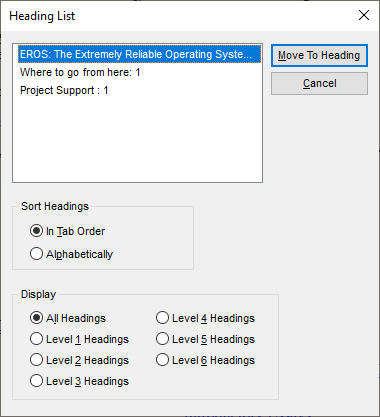
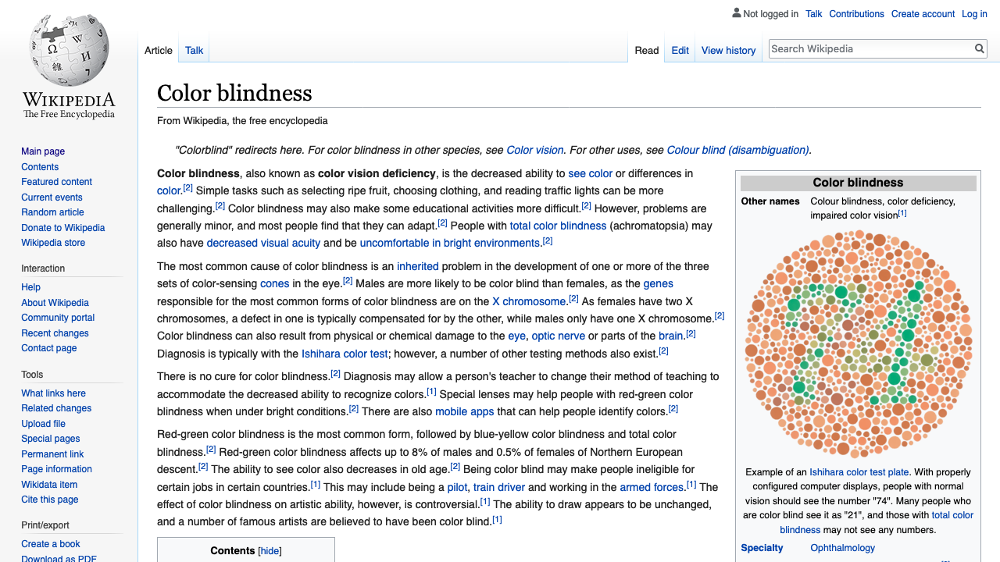
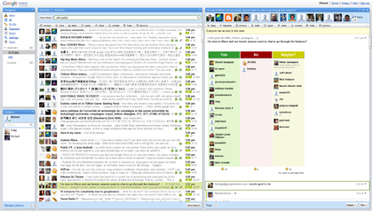
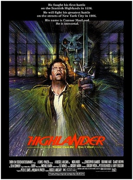
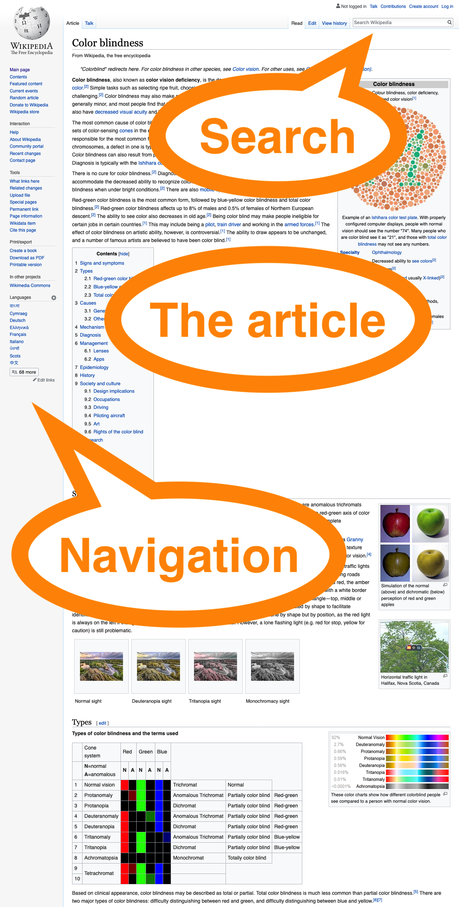
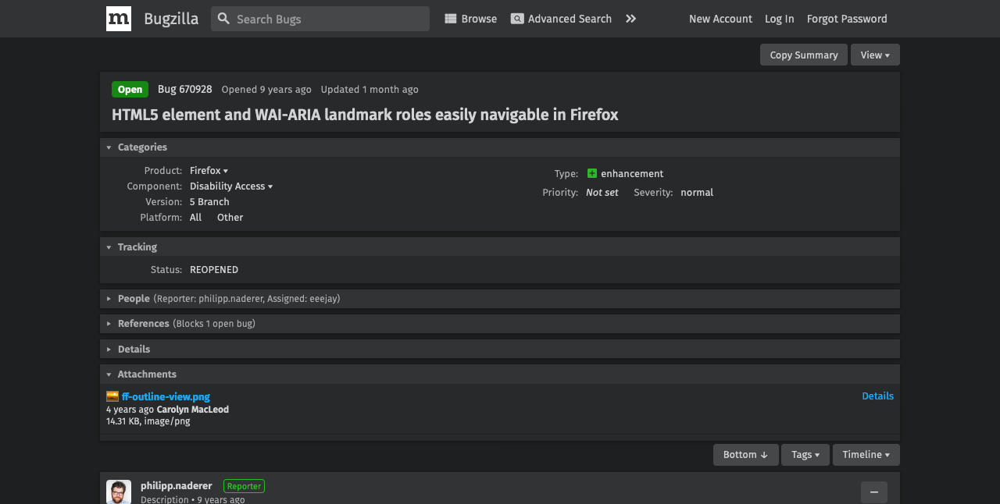

Landmarks
Matthew Tylee Atkinson
@matatk on Twitter
Hi, I'm Matthew. By day, I help people make web sites and apps accessible, with The Paciello Group. By night, I help make random other things accessible :-).
This is a talk about landmark regions, a technique that can make your web pages much easier to navigate. You may've heard of landmarks before, but I wanted to step back and tell the story of how they came about, as this helps us to understand what they're for and how much they rock.
When navigating about the web, we often have two important questions in mind…
What's on the page?
How can I get there?
Several different ways to address these questions have been created over the years, probably the most fundamental and well-recognised being…
Headings
In the beginning, websites used just headings, lists and links to give them structure. For example, the EROS (Extremely Reliable Operating System) home page has a simple layout with some paragraphs of text as its content, and headings, lists and links for navigation.

This verison of the EROS home page is actually from 2005, so its minimalism comes from being a proper Computer Sciencey site in the best tradition—and if you're into Operating System design, EROS had many really interesting security and general design features.
People using a keyboard or screen reader could use a few keys to navigate…
The ↑ key to scroll up, or announce the previous element.
The ↓ key to scroll down, or announce the next element.
The Tab key to move between interactive elements (links, buttons, form controls).
Screen readers provide additional shortcuts, such as H to skip to the next heading (and Shift+H to skip back).
Screen reader users can also bring up a dialog listing the headings found on a page, and their levels, and navigate between them this way, too. You can move around the list in the dialog and choose to go straight to a specific heading.

This sort of keyboard navigation is fundamental, works well and is still vital to exploring content, but…
Sites evolved
The web has more capabilities and is more complex now, having evolved in different ways…
One way in which sites have evolved is in terms of visual design. For example, The Paciello Group's home page has simple content, but a spatial visual design that immediately communicates the structure of the page: it's clear that there's a main central section, which draws the visitor's attention, and some ancilliary information down at the bottom.

Content-focused pages may have a large volume of information on them. Here's the Wikipedia article on colour perception deficit, or colour-blindness, as an example…

There are a lot of headings here, but they match the structure of the article, so are both helpful and necessary for fine-grained navigation around it.

If we zoom into the top of the page, though, the visual design indicates that there are some actions that can be accomplished that are not just about reading the article…

Actions that can be performed include…
- Searching Wikipedia.
- Viewing the history or metadata around the article.
- Navigating about Wikipedia as a whole.

We also use the web for different things, including highly interactive tasks such as online shopping.

Headings can help us navigate here, but what if we wanted to move directly between the product search results and our shopping basket, for example?
There are full-featured web-apps for other tasks too, such as communications suites, whose interfaces may include several different panes for folder navigation, contacts, message lists and content.
This screengrab happens to be of Google Wave. I really miss it; not so much the UI, but how elegantly it handled group communications. Anyway, the screengrab is somewhat low-res, so may seem blurry, which is interesting because if you can see the image, even though it's a bit blurry, you may still be able to discern the different areas of the UI quite quickly.

The next innovation in navigation that I want to talk about helped alleviate several more of the challenges we've considered…
Skip links
Skip links are links provided by the web author, placed by convention at the top of the page. Their purpose is to take you directly to the main content. Whilst you might want to explore any navigational content towards the start of the page on your first few visits, if you are familiar with the site, it can save a great deal of time to skip the navigation when it's not needed.
It's really important to consider that whilst it might not take long to glance at the navigational links, it could take you quite some time to read through them all—and that's exactly what a screen reader does.
Here's a run-down of a skip link in use on a BBC Sports news story page…
We begin at the top of the article's page, which features global and local navigation links, a sidebar and the start of the article's content.

Upon the first press of the Tab key, the skip link becomes visible.

Following the link moves the focus to the start of the article, missing out all the navigational links.

Skip links are awesome
Easily discoverable—by convention they're always at the top of the page.
Avoid repeated content
Save your visitors' time—try reading through the navigation links with a screen reader: they're all important and helpful, but someone who's familar with them and just wants to get to the article can save so much time by skipping them.
But
Skip links do have some limitations; they're…
Only at the top (or where the author put them)—you can't access them from anywhere.
Unable to give a full overview of the content—they only let you skip over, or to, what the page author prescribed.
Not quite so useful in app-like settings
There is a solution to these problems, though, and that is of course…
Landmark regions
Landmark regions are…
Signposts to broad areas of the page.
Non-visual complement to visual design—they don't change the appearance of a page; they let you impart the same structural information that the visual design does to people who may not be able to perceive it.
Random access—you can move between landmarks wherever you are on the page.
Part of the W3C's Accessible Rich Internet Application (ARIA) standards. ARIA was created to help authors express, and browsers expose, the information that assistive technologies need to convey more complex user interfaces and interactions in web-apps. Support for ARIA, including landmark regions, across browsers and assistive technologies is mature.
We can use landmarks to call out the areas of a page, for example here again is The Paciello Group home page we considered before.

Looking at this page visually quickly gives you the impression that the main areas are:
- Navigation, which happens to be at the top.
- The "main bit", in the middle.
- An area that's probably contact information and other stuff, at the bottom.
That "other stuff" part is really key here—if you're a person who browses visually, you get all that info from just a glance, but if you can't see the screen at all, there's no such overview; you just have read through all of the content.
How would a screen reader present this overview to your visitors? Well you can cycle through the regions on the page, or skip directly to the main region using a shortcut key, but you can also bring up a dialog in the same way as with headings…

As it happens, the landmark structure on TPG's home page includes a "banner" area that contains the logo as well as the "navigation" region with links; this is a fairly common structure. Also of note is that landmark regions, like headings, can have a tree-like structure, as they can be nested.
But how does the screen reader get to know about these landmark regions on the page?
- Your content's mark-up indicates the landmarks—they will often correspond to the areas called out by the page's visual design.
- The browser recognises and exposes them to…
- Assistive Technologies, which present them to the user, and provide keyboard navigation shortcuts too.
As a page author, you may be asking…
How do I provide landmarks?
The following examples show how to provide a landmark region for search functionality, the main content, footer and then other bits too.
Search box
A conventional way to mark up a search UI is using a textbox, and a button labelled "Search", both wrapped in a <div> element.
Search box with landmark
A helpful landmark region can be added simply, by setting the role attribute on the container <div> element to a value of "search".
Main content
Steve Faulkner did some research and found that there are some common ways people mark up the container of the page's main content. They may use a <div> element with an id of "content".
Main content: popular id value
However, using an id of "main" is even more popular.
Main content with landmark
To have this container recognised as the "main" landmark, simply add a role attribute with a value of "main".

However, as with immortals from Highlander, there can only be one <main> element per page, so the code could be simplified…
Main content identified only by landmark role
You could just use the role attribute instead of the id value to identify the main content, and key your CSS off the role attribute only.
But there's an even simpler and cleaner way, courtessy of HTML5…

Main content: HTML5 version
HTML5 introduced the <main> element, which brings with it an implicit "main" landmark.
Main content: summary
In summary…
is the same, semantically, as just
Recap: how does the landmark help?
- If you're using a screen reader, you'll be able to You can jump to it using keybaord shortcuts.
- When you enter the region, screenScreen readers will announce something like "main" or perhaps "main region".
It's important to bear in mind that the exact announcement varies with screen reader software, and your visitor's settings—the main thing you need to concentrate on is providing the appropriate structural cues; it's up to the user how to receive them and navigate based on them.
Footer
A similar story as above applies when marking up your footer content…
could become
or, more simply
HTML5 Automagicalness
HTML5 provides a number of elements that bring implicit landmark regions with them.
| Element | Landmark region role |
|---|
<header> | banner1 |
<nav> | navigation |
<main> | main |
<section> | region2 |
<form> | form2 |
<aside> | complementary |
<footer> | contentinfo1 |
- only considered landmark regions if scoped to the
<body> element, i.e. page-global.
- only considered landmark regions if labelled.
Labelling landmarks
Labelling landmarks allows you to differentiate them, and further explain their purpose. Some HTML5 elements are actually only recognised as landmarks if they have a label—this is good because it avoids there being way too many landmarks on the page and overwhelming the user with them.
Say you have a <section> element that contains a paragraph…
That isn't recognised as a landmark, but thisa <section> containing a heading (an <h2> of "Penguins" in this case), with an aria-labelledby attribute that points to the heading by referencing it's id is considered a landmark:
In this case, Screen readers may say
"Penguins, region"
when entering the region (or listing it in the dialog mentioned before).
Golden
Rules
I've got
5
golden rules for you…
Golden Rule 1
Landmarks: should be used to provide an overview of the content.
Headings: should be used to provide the fine-grained navigation.
Let's go back to the Wikipedia article and the different regions we discussed before…

Let's call the regions…
- Search
- The article
- Navigation
In contrast to the three visually-apparent regions, there are tens of headings.
The complexity of the headings contrasts with the relatively simpler landmark region structure. This is ideal, because landmarks are there to give an overview of what's on the page, and headings are for the fine-grained navigation around the content, and must reflect its structure.
Golden Rule 2
Use relatively few landmarks…
…but cover all of the content on the page.
This ensures that all of the content on the page has a home—that there's nothing outside of a landmark region that could be missed—but the overview is as concise as can be.
Golden Rule 3
If you've got more than one of the same type of landmark on a page,
use labels to differentiate them.
Imagine we have two navigation landmarks on a page, provided by two <nav> elements. Without delving into their content, it's not clear what the purpose of each of them is, though it may be obvious from the visual design of the page.
Labels can be provided to make the different purposes of the navigation regions clear. We can give one <nav> element an aria-label attribute value of "Site" and the other one a value of "Page", for example.
But, using visually-apparent headings for labelling the regions is better, because they can be helpful to more users, particularly anyone who finds reading difficult, or for whom the visual layout may be unclear.…
You can provide visual labels by:
- placing visually-apparent headings in each
<nav> element;
- giving each heading an
id;
- linking the
<nav> elements to the headings by setting aria-labelledby attributes on the <nav> elements to point to the id values of the headings.
As we've only made a visual change here, the screen reader would the same things ("Site, navigation" and "Page, navigation").
Golden Rule 4
There's no need to include the type
of the landmark region in its label.
Given a <nav> element with an aria-label of "Site"…
Screen readers may say
"Site, navigation"
However, if the type of the region is included in the aria-label attribute's value…
Screen readers may say
"Site Navigation, navigation"
…which is probably not what you want :-).
Golden Rule 5
Generally avoid using the
aria-roledescription
attribute
⏪
Ok, let's rewind slightly…
What's the aria-roledescription attribute? It lets you override how a role is announced by screen readers. Let's imagine a <main> element with a role description of "Slartibartfast"…
Screen readers may say
"Slartibartfast"
when entering this region, or listing it in the dialog mentioned before—i.e. not "main".
However, providing role descriptions can be pretty helpful in specific circumstances. Let's consider a web-app that's a slide show viewer. We have a <section> element labelled by a heading that says "Reasons landmarks rock" and an aria-roledescription of "Slide"…
Screen readers may say
"Reasons landmarks rock, Slide"
which is quite nice!
With great power…, comes great responsibility though! There are some serious challenges that using this attribute can create for your visitors…
Subverting users' expectations by changing the way that standard regions they've come to expect to find are announced, raising inconsistencies across sites and sowing the seeds of confusion.
Creating challenges for localisation, ranging from simply forgetting to localise your role descriptions because they're non-obvious, to making it technically harder to do so because they're attribute values as opposed to content contained within elements.
The specification section on aria-roledescription gives more info and examples of other ways you might use—and should be careful using—the attribute.
Landmarks for everyone
Now you know how to provide landmark regions in a really helpful way, and how they can be so clear and time-saving for people using screen readers. But surely landmarks could be helpful for everyone, so what about keyboard-only users?

…and what about mouse users?

There have been some long-running discussions with browser vendors on providing ways for people to explore the landmarks on the page, even without assistive technology. For example, there's a Firefox bug on the issue…

But also, is there a way that you, as a web developer, can check your site's landmark structure and experiment with improving on it? It'll be great if browsers do decide to implement all of the above (currently there are a number of questions that need to be answered, preferably through consensus in the industry, before that happens, but we're hopeful). For now, though, you can use the "Landmarks" browser extension…
Landmarks extension demo
This is a browser extension that I maintain that provides keyboard-only access to landmarks, and developer tools for inspecting and refining them. Let's check it out…
At this point, the Landmarks browser extension would be demonstrated. The demo shows how to use it to navigate pages, and also, for developers, how to use the DevTools part of the extension to check how landmark regions are marked up, and add/edit them with updates reflected by the extension in real-time.
Here's the outline for the demo…
- Visit the demo World of Wombats page.
- Check out the landmarks on the page, via the keyboard and the sidebar.
- Note that the two navigation regions are not differentiated.
- Open the Landmarks DevTools panel.
- Use it to observe how the
main region is labelled.
- Add an
id to the page title.
- Use the page title to label the first
navigation region.
- Add a heading for the "On this page…" navigation links.
- Use the newly-added local heading to label the second
navigation region.
Thanks to…
- David Todd: original Firefox Landmarks extension author
- Steve Faulkner: inspiration, and the
<main> element
- The Paciello Group: HTML5 support development time
- Mark Withall: test-driven development advice
- Carolyn MacLeod: much constructive feedback
- Dan Nye, Jeff Home: web development advice
- Everyone who filed issues, gave feedback or wrote posts
- The Stack Overflow, Mozilla BugZilla & MDN Web Docs, Chromium-Extensions group and GitHub communities
How much do you shrink?
The BBC Sport article referenced earlier mentioned that: the average runner shrinks 1.25cm during a marathon, due to spine compression. We all get shorter throughout the day, too, but the amount varies.
{kind=link}
{kind=link}
{kind=link}